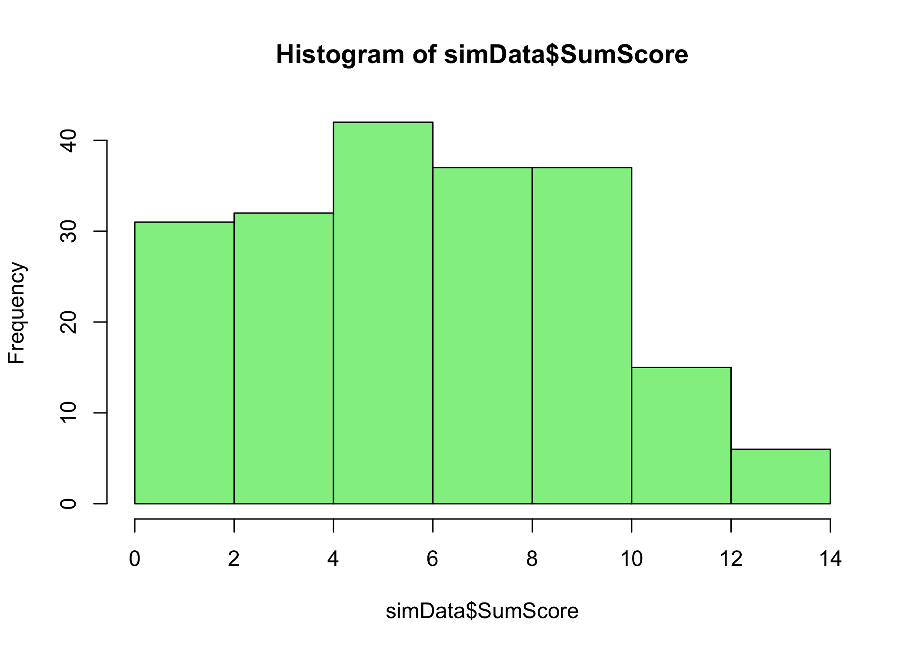

There are several reasons for putting this blog post together. The larger issue is to investigate ways to analyze relationships between measures that have varying levels of measurement uncertainty across their respective range or continuum. This is relevant to any kind of latent variable measurement that uses multiple indicators/items/questions as a way to assess a latent variable.
In classical test theory (CTT; i.e. factor analysis) the assumption is generally that the measurement error is a single value, constant across the scale and across participants. Modern test theory (Rasch Measurement Theory (RMT) or Item Response Theory (IRT)) has tools to describe the varying uncertainties of the measure itself, and also allows for estimation of measurement uncertainty for each individual, based on the item properties.
In the “business-as-usual” approach, no matter which types of measurement uncertainty are ignored. The simple case of have two variables and an ordinary least squares (OLS) linear regression model will take the input from each variable as a perfect measurement. Bayesians may have another take on this, and I will look into that at a later point, so for now this is relevant for frequentist statistics.
“Business-as-usual” also makes use of ordinal sum scores disguised as interval scores. There is a seemingly wide-spread idea that estimated person interval scores is not significantly different from ordinal sum scores, and we’ll look further into that as well by including ordinal sum scores.
One way to take measurement uncertainty into account in a linear regression model is to use Weighted Least Squares (WLS) instead of OLS. However, this approach only allows weights for one variable. The weights will be based on the measurement uncertainty for the interval scores.
Additionally, we will use Quantile Regression, with and without weights.
2 Data
Data were collected for a project evaluating multiple work environment questionnaires. Two of the analyzed scales will be used in our example, as a foundation for simulated data. More information is available at the GitHub repository and website.
The two questionnaires cover the domains of “recovery” and “agency”, where the latter refers to workers’ perceived control over their work situation. Our analyses will look at how “agency” affects “recovery”. We will retain an interval scale score for the “recovery” scale throughout, while varying the “agency” between ordinal sum score, interval score, and interval score with weights, and check how these three reproduce the true simulated relationship between the two scales.
Variables will be named SEM for standard error of measurement, Theta for interval theta/scores/locations, and SumScore for ordinal sum scores.
We’ll also add analyses using structural equation modeling and weighted sum scores (based on confirmatory factor analysis factor loadings).
We’ll pretend that we have n = 400 that are measured at two time points, with a specified correlation between measurements of 0.5. The difference in group means is set to 1 logit, and the standard deviation will be 1 logit for both points of measurement.
Code
set.seed(1523)n<-100data<-rnorm_multi(n =n, mu =c(-0.5, +0.5), sd =c(1, 1), r =c(0.5), varnames =c("pre", "post"), empirical =FALSE)cor_test("pre", "post", data =data)
Parameter1 | Parameter2 | r | 95% CI | t(98) | p
-----------------------------------------------------------------
pre | post | 0.55 | [0.39, 0.67] | 6.49 | < .001***
Observations: 100
Code
# light wrangling to get long format and an id variabledata_long<-data%>%add_column(id =1:(nrow(.)))%>%pivot_longer(cols =c("pre", "post"), names_to ="time", values_to ="theta")%>%mutate(theta =round(theta, 4), time =dplyr::recode(time, "pre"=0, "post"=1))#write_csv(data, "data800simPrePost.csv")
3.2 Reference LMM results from the simulated theta values
Code
lmm0<-lmer(scale(theta)~time+(1|id), data =data_long)lmm0%>%tidy(conf.int =TRUE)%>%mutate(across(where(is.numeric), round, 4))
# A tibble: 4 × 8
effect group term estimate std.error statistic conf.low conf.high
<chr> <chr> <chr> <dbl> <dbl> <dbl> <dbl> <dbl>
1 fixed <NA> (Intercept) -0.436 0.0902 -4.83 -0.613 -0.259
2 fixed <NA> time 0.872 0.0857 10.2 0.704 1.04
3 ran_pars id sd__(Interc… 0.668 NA NA NA NA
4 ran_pars Residual sd__Observa… 0.606 NA NA NA NA
The standardized coefficient of time is 0.424. This will be our reference value for comparison with the other analyses since ordinal sum scores and estimated theta scores will not be on the same scale.
3.3 Simulating polytomous data
Prepare the input item parameters.
Code
# item parametersagencyParams<-read_csv("AgencyItemParameters.csv")%>%as.matrix()# put item parameters for agency into a list objectcolnames(agencyParams)<-NULLtlist<-lapply(1:nrow(agencyParams), function(i){as.list(agencyParams[i, ])})# simulate polytomous datasimData<-SimPartialScore( deltaslist =tlist, thetavec =data_long$theta)%>%as.data.frame()
Confirmatory factor analysis (CFA) is used to estimate model fit.
Code
# specify modelcfa1<-'agencyCFA =~ V1 + V2 + V3 + V4'# estimate modelcfa1.fit<-cfa(cfa1, ordered =TRUE, estimator ="DWLS", data =simData)# get fit indices etcsummary(cfa1.fit, fit.measures =TRUE)
lavaan 0.6.15 ended normally after 13 iterations
Estimator DWLS
Optimization method NLMINB
Number of model parameters 20
Number of observations 200
Model Test User Model:
Test statistic 1.426
Degrees of freedom 2
P-value (Chi-square) 0.490
Model Test Baseline Model:
Test statistic 441.330
Degrees of freedom 6
P-value 0.000
User Model versus Baseline Model:
Comparative Fit Index (CFI) 1.000
Tucker-Lewis Index (TLI) 1.004
Root Mean Square Error of Approximation:
RMSEA 0.000
90 Percent confidence interval - lower 0.000
90 Percent confidence interval - upper 0.127
P-value H_0: RMSEA <= 0.050 0.639
P-value H_0: RMSEA >= 0.080 0.209
Standardized Root Mean Square Residual:
SRMR 0.023
Parameter Estimates:
Standard errors Standard
Information Expected
Information saturated (h1) model Unstructured
Latent Variables:
Estimate Std.Err z-value P(>|z|)
agencyCFA =~
V1 1.000
V2 0.918 0.109 8.403 0.000
V3 1.179 0.138 8.542 0.000
V4 0.942 0.110 8.576 0.000
Intercepts:
Estimate Std.Err z-value P(>|z|)
.V1 0.000
.V2 0.000
.V3 0.000
.V4 0.000
agencyCFA 0.000
Thresholds:
Estimate Std.Err z-value P(>|z|)
V1|t1 -0.613 0.095 -6.438 0.000
V1|t2 0.088 0.089 0.987 0.323
V1|t3 0.842 0.101 8.310 0.000
V1|t4 2.326 0.265 8.791 0.000
V2|t1 -0.842 0.101 -8.310 0.000
V2|t2 -0.088 0.089 -0.987 0.323
V2|t3 0.824 0.101 8.180 0.000
V2|t4 1.881 0.178 10.583 0.000
V3|t1 -0.896 0.103 -8.694 0.000
V3|t2 -0.292 0.090 -3.240 0.001
V3|t3 0.332 0.091 3.661 0.000
V3|t4 1.645 0.150 10.980 0.000
V4|t1 -1.282 0.121 -10.576 0.000
V4|t2 0.151 0.089 1.692 0.091
V4|t3 1.036 0.109 9.547 0.000
V4|t4 2.054 0.205 10.020 0.000
Variances:
Estimate Std.Err z-value P(>|z|)
.V1 0.507
.V2 0.585
.V3 0.315
.V4 0.563
agencyCFA 0.493 0.074 6.682 0.000
Scales y*:
Estimate Std.Err z-value P(>|z|)
V1 1.000
V2 1.000
V3 1.000
V4 1.000
Code
# get standardized factor loadingsinspect(cfa1.fit,what="std")$lambda
agnCFA
V1 0.702
V2 0.644
V3 0.828
V4 0.661
Code
# save factor loadings to a vectorcfa1_loadings<-inspect(cfa1.fit,what="std")$lambda%>%as.data.frame()%>%pull(agencyCFA)# CTT reliabilitypsych::alpha(simData)
Omega
Call: omegah(m = m, nfactors = nfactors, fm = fm, key = key, flip = flip,
digits = digits, title = title, sl = sl, labels = labels,
plot = plot, n.obs = n.obs, rotate = rotate, Phi = Phi, option = option,
covar = covar)
Alpha: 0.76
G.6: 0.72
Omega Hierarchical: 0.7
Omega H asymptotic: 0.89
Omega Total 0.78
Schmid Leiman Factor loadings greater than 0.2
g F1* F2* F3* h2 u2 p2
V1 0.73 0.49 0.51 1.08
V2 0.52 0.39 0.43 0.57 0.62
V3 0.66 0.45 0.64 0.36 0.69
V4 0.66 0.41 0.59 1.04
With Sums of squares of:
g F1* F2* F3*
1.67 0.36 0.00 0.00
general/max 4.69 max/min = Inf
mean percent general = 0.86 with sd = 0.24 and cv of 0.28
Explained Common Variance of the general factor = 0.82
The degrees of freedom are -3 and the fit is 0
The number of observations was 200 with Chi Square = 0 with prob < NA
The root mean square of the residuals is 0
The df corrected root mean square of the residuals is NA
Compare this with the adequacy of just a general factor and no group factors
The degrees of freedom for just the general factor are 2 and the fit is 0.06
The number of observations was 200 with Chi Square = 11.68 with prob < 0.0029
The root mean square of the residuals is 0.08
The df corrected root mean square of the residuals is 0.13
RMSEA index = 0.155 and the 10 % confidence intervals are 0.078 0.248
BIC = 1.08
Measures of factor score adequacy
g F1* F2* F3*
Correlation of scores with factors 0.86 0.60 0 0.08
Multiple R square of scores with factors 0.73 0.36 0 0.01
Minimum correlation of factor score estimates 0.46 -0.28 -1 -0.99
Total, General and Subset omega for each subset
g F1* F2* F3*
Omega total for total scores and subscales 0.78 0.69 NA 0.66
Omega general for total scores and subscales 0.70 0.46 NA 0.66
Omega group for total scores and subscales 0.08 0.23 NA 0.00
3.5 Estimate person thetas/latent scores
Next step is to estimate person thetas/scores/locations based on the pre-specified item parameters.
Code
# estimate person thetaspersonThetas<-RIestThetas(simData,itemParams =agencyParams)# estimate person theta SEMpersonSEM<-map_vec(personThetas, ~catR::semTheta(.x, it =agencyParams, method ="WL", model ="PCM"))# add person thetas to the simulated datasimData$estTheta<-personThetassimData$estSEM<-personSEM# add ordinal sum scores to the simulated datasimData<-simData%>%mutate(SumScore =V1+V2+V3+V4)# add weighted ordinal sum scores to the simulated datasimData$weightedSumScore<-simData$V1*cfa1_loadings[1]+simData$V2*cfa1_loadings[2]+simData$V3*cfa1_loadings[3]+simData$V4*cfa1_loadings[4]# add simulated theta values to the simDatasimData$simTheta<-data_long$theta# add id variablesimData$id<-data_long$id# create grouping variable for quintilessimData$quintile<-as.factor(ntile(simData$simTheta, 5))# add time variable to datasimData$time<-data_long$timewrite_csv(simData, "simData.csv")
Code
hist(simData$simTheta, col ="lightblue")hist(simData$estTheta, col ="lightpink")hist(simData$SumScore, col ="lightgreen")hist(simData$weightedSumScore, col ="darkgreen")
Histograms of generated and estimated theta values, ordinal sum scores, and weighted ordinal sum scores
Histograms of generated and estimated theta values, ordinal sum scores, and weighted ordinal sum scores

Histograms of generated and estimated theta values, ordinal sum scores, and weighted ordinal sum scores
Histograms of generated and estimated theta values, ordinal sum scores, and weighted ordinal sum scores
Code
# density plot for all four of the above histograms, facet_wrapped by timesimData%>%mutate(across(c("simTheta", "estTheta", "SumScore", "weightedSumScore"), ~scale(.x)))%>%pivot_longer(cols =c("simTheta", "estTheta", "SumScore", "weightedSumScore"), names_to ="variable", values_to ="value")%>%ggplot(aes(x =value, fill =variable))+geom_density(alpha =0.5)+facet_wrap(~time)+theme_bw()+scale_fill_viridis_d()+labs(x ="Value", y ="Density", fill ="Variable", subtitle ="Split by timepoint 0 and 1")
Density plot of scaled values for all four variables
4 Statistical analyses
4.1 LMM with estimated theta
Code
lmm1<-lmer(scale(estTheta)~time+(1|id), data =simData)lmm1%>%tidy(conf.int =TRUE)%>%mutate(across(where(is.numeric), round, 4))
# A tibble: 4 × 8
effect group term estimate std.error statistic conf.low conf.high
<chr> <chr> <chr> <dbl> <dbl> <dbl> <dbl> <dbl>
1 fixed <NA> (Intercept) -0.347 0.094 -3.70 -0.532 -0.163
2 fixed <NA> time 0.695 0.0998 6.96 0.499 0.890
3 ran_pars id sd__(Interc… 0.620 NA NA NA NA
4 ran_pars Residual sd__Observa… 0.706 NA NA NA NA
# plot range of estSEM across estThetasimData%>%ggplot(aes(x =estTheta, y =estSEM))+geom_point()+geom_line(group =1)+theme_bw()+labs(x ="Estimated theta", y ="Estimated theta SEM")
Plot of estimated theta SEM against estimated theta
Code
lmm2<-lmer(scale(estTheta)~time+(1|id), data =simData, weights =estSEM)lmm2%>%tidy(conf.int =TRUE)%>%mutate(across(where(is.numeric), round, 4))
# A tibble: 4 × 8
effect group term estimate std.error statistic conf.low conf.high
<chr> <chr> <chr> <dbl> <dbl> <dbl> <dbl> <dbl>
1 fixed <NA> (Intercept) -0.429 0.101 -4.27 -0.626 -0.232
2 fixed <NA> time 0.798 0.0992 8.04 0.603 0.992
3 ran_pars id sd__(Interc… 0.731 NA NA NA NA
4 ran_pars Residual sd__Observa… 0.571 NA NA NA NA
lmm3<-lmer(scale(SumScore)~time+(1|id), data =simData)lmm3%>%tidy(conf.int =TRUE)%>%mutate(across(where(is.numeric), round, 4))
# A tibble: 4 × 8
effect group term estimate std.error statistic conf.low conf.high
<chr> <chr> <chr> <dbl> <dbl> <dbl> <dbl> <dbl>
1 fixed <NA> (Intercept) -0.336 0.0944 -3.57 -0.522 -0.152
2 fixed <NA> time 0.673 0.101 6.64 0.474 0.872
3 ran_pars id sd__(Interc… 0.614 NA NA NA NA
4 ran_pars Residual sd__Observa… 0.717 NA NA NA NA
lmm4<-lmer(scale(weightedSumScore)~time+(1|id), data =simData)lmm4%>%tidy(conf.int =TRUE)%>%mutate(across(where(is.numeric), round, 4))
# A tibble: 4 × 8
effect group term estimate std.error statistic conf.low conf.high
<chr> <chr> <chr> <dbl> <dbl> <dbl> <dbl> <dbl>
1 fixed <NA> (Intercept) -0.333 0.0945 -3.53 -0.518 -0.148
2 fixed <NA> time 0.666 0.102 6.54 0.467 0.866
3 ran_pars id sd__(Interc… 0.611 NA NA NA NA
4 ran_pars Residual sd__Observa… 0.720 NA NA NA NA
# rbind together lmm0 to lmm4 in one dataframelmm_summary<-rbind(tidy(lmm0), tidy(lmm1), tidy(lmm2), tidy(lmm3), tidy(lmm4))%>%add_column(model =rep(c("lmm0", "lmm1estTheta", "lmm2weightedTheta", "lmm3sumscore", "lmm4weighted Sumscore"),each =4))lmm_summary%>%filter(term=="time")%>%write_csv(paste0(n,"_lmm_summary.csv"))
Code
# check ICC vs correlation pre/post for estThetasimData%>%mutate(time =factor(time, labels =c("pre","post")))%>%pivot_wider(names_from =time, values_from =estTheta, id_cols ="id")%>%cor_test("pre","post")
Parameter1 | Parameter2 | r | 95% CI | t(98) | p
-----------------------------------------------------------------
pre | post | 0.44 | [0.26, 0.58] | 4.80 | < .001***
Observations: 100
@online{johansson2023,
author = {Magnus Johansson},
title = {Using {Rasch} and {WLS} to Account for Measurement
Uncertainties in Regression Models},
date = {2023-10-17},
url = {https://pgmj.github.io/compLatent.html},
langid = {en}
}
For attribution, please cite this work as:
Magnus Johansson. (2023, October 17). Using Rasch and WLS to account
for measurement uncertainties in regression models. https://pgmj.github.io/compLatent.html
Source Code
---title: "Using Rasch and WLS to account for measurement uncertainties in regression models"author: name: Magnus Johansson affiliation: RISE Research Institutes of Sweden affiliation-url: https://www.ri.se/en/what-we-do/projects/center-for-category-based-measurements orcid: 0000-0003-1669-592Xdate: last-modifiedcitation: type: 'webpage'csl: apa.cslexecute: cache: false warning: false message: falseeditor: markdown: wrap: 72editor_options: chunk_output_type: console---## IntroductionThere are several reasons for putting this blog post together. The larger issue is to investigate ways to analyze relationships between measures that have varying levels of measurement uncertainty across their respective range or continuum. This is relevant to any kind of latent variable measurement that uses multiple indicators/items/questions as a way to assess a latent variable. In classical test theory (CTT; i.e. factor analysis) the assumption is generally that the measurement error is a single value, constant across the scale and across participants. Modern test theory (Rasch Measurement Theory (RMT) or Item Response Theory (IRT)) has tools to describe the varying uncertainties of the measure itself, and also allows for estimation of measurement uncertainty for each individual, based on the item properties.In the "business-as-usual" approach, no matter which types of measurement uncertainty are ignored. The simple case of have two variables and an ordinary least squares (OLS) linear regression model will take the input from each variable as a perfect measurement. Bayesians may have another take on this, and I will look into that at a later point, so for now this is relevant for frequentist statistics. "Business-as-usual" also makes use of ordinal sum scores disguised as interval scores. There is a seemingly wide-spread idea that estimated person interval scores is not significantly different from ordinal sum scores, and we'll look further into that as well by including ordinal sum scores.One way to take measurement uncertainty into account in a linear regression model is to use Weighted Least Squares (WLS) instead of OLS. However, this approach only allows weights for one variable. The weights will be based on the measurement uncertainty for the interval scores.Additionally, we will use Quantile Regression, with and without weights.## DataData were collected for a project evaluating multiple work environment questionnaires. Two of the analyzed scales will be used in our example, as a foundation for simulated data. More information is available at the GitHub [repository](https://github.com/pgmj/PreventOSA) and [website](https://pgmj.github.io/PreventOSA/).The two questionnaires cover the domains of "recovery" and "agency", where the latter refers to workers' perceived control over their work situation. Our analyses will look at how "agency" affects "recovery". We will retain an interval scale score for the "recovery" scale throughout, while varying the "agency" between ordinal sum score, interval score, and interval score with weights, and check how these three reproduce the true simulated relationship between the two scales.Variables will be named `SEM` for standard error of measurement, `Theta` for interval theta/scores/locations, and `SumScore` for ordinal sum scores.We'll also add analyses using structural equation modeling and weighted sum scores (based on confirmatory factor analysis factor loadings).```{r}library(RISEkbmRasch)library(easystats)library(quantreg)library(faux)library(broom.mixed)library(lavaan)library(DescTools)library(lme4)### some commands exist in multiple packages, here we define preferred ones that are frequently usedselect <- dplyr::selectcount <- dplyr::countrecode <- car::recoderename <- dplyr::rename```## Simulating data n = 800We'll pretend that we have n = 400 that are measured at two time points, with a specified correlation between measurements of 0.5. The difference in group means is set to 1 logit, and the standard deviation will be 1 logit for both points of measurement.```{r}set.seed(1523)n <-100data <-rnorm_multi(n = n, mu =c(-0.5, +0.5),sd =c(1, 1),r =c(0.5), varnames =c("pre", "post"),empirical =FALSE)cor_test("pre", "post", data = data)# light wrangling to get long format and an id variabledata_long <- data %>%add_column(id =1:(nrow(.))) %>%pivot_longer(cols =c("pre", "post"), names_to ="time", values_to ="theta") %>%mutate(theta =round(theta, 4),time = dplyr::recode(time, "pre"=0, "post"=1))#write_csv(data, "data800simPrePost.csv")```### Scatter plot```{r}data %>%ggplot(aes(x = pre, y = post)) +geom_point() +geom_smooth(method ="lm", se =TRUE) +theme_bw()```### Reference LMM results from the simulated theta values```{r}lmm0 <-lmer(scale(theta) ~ time + (1| id), data = data_long) lmm0 %>%tidy(conf.int =TRUE) %>%mutate(across(where(is.numeric), round, 4))icc(lmm0)StdCoef(lmm0)```The standardized coefficient of time is 0.424. This will be our reference value for comparison with the other analyses since ordinal sum scores and estimated theta scores will not be on the same scale.### Simulating polytomous dataPrepare the input item parameters.```{r}# item parametersagencyParams <-read_csv("AgencyItemParameters.csv") %>%as.matrix()# put item parameters for agency into a list objectcolnames(agencyParams) <-NULLtlist <-lapply(1:nrow(agencyParams), function(i) {as.list(agencyParams[i, ])})# simulate polytomous datasimData <-SimPartialScore(deltaslist = tlist,thetavec = data_long$theta) %>%as.data.frame()```A brief look at the simulated data.```{r}# distributionRIbarstack(simData)``````{r}# reliability/test informationRItif(simData, cutoff =2.5, samplePSI =TRUE)```TIF 2.5 = PSI 0.6### Classical test theoryConfirmatory factor analysis (CFA) is used to estimate model fit.```{r}# specify modelcfa1 <-'agencyCFA =~ V1 + V2 + V3 + V4'# estimate modelcfa1.fit <-cfa(cfa1, ordered =TRUE, estimator ="DWLS",data = simData)# get fit indices etcsummary(cfa1.fit, fit.measures =TRUE)# get standardized factor loadingsinspect(cfa1.fit,what="std")$lambda# save factor loadings to a vectorcfa1_loadings <-inspect(cfa1.fit,what="std")$lambda %>%as.data.frame() %>%pull(agencyCFA)# CTT reliabilitypsych::alpha(simData)psych::omega(simData)```### Estimate person thetas/latent scoresNext step is to estimate person thetas/scores/locations based on the pre-specified item parameters.```{r}# estimate person thetaspersonThetas <-RIestThetas(simData,itemParams = agencyParams)# estimate person theta SEMpersonSEM <-map_vec(personThetas, ~ catR::semTheta(.x, it = agencyParams, method ="WL", model ="PCM"))# add person thetas to the simulated datasimData$estTheta <- personThetassimData$estSEM <- personSEM# add ordinal sum scores to the simulated datasimData <- simData %>%mutate(SumScore = V1+V2+V3+V4)# add weighted ordinal sum scores to the simulated datasimData$weightedSumScore <- simData$V1*cfa1_loadings[1] + simData$V2*cfa1_loadings[2] + simData$V3*cfa1_loadings[3] + simData$V4*cfa1_loadings[4]# add simulated theta values to the simDatasimData$simTheta <- data_long$theta# add id variablesimData$id <- data_long$id# create grouping variable for quintilessimData$quintile <-as.factor(ntile(simData$simTheta, 5))# add time variable to datasimData$time <- data_long$timewrite_csv(simData, "simData.csv")``````{r}#| layout-ncol: 2#| fig-cap: "Histograms of generated and estimated theta values, ordinal sum scores, and weighted ordinal sum scores"hist(simData$simTheta, col ="lightblue")hist(simData$estTheta, col ="lightpink")hist(simData$SumScore, col ="lightgreen")hist(simData$weightedSumScore, col ="darkgreen")``````{r}#| fig-cap: "Density plot of scaled values for all four variables"# density plot for all four of the above histograms, facet_wrapped by timesimData %>%mutate(across(c("simTheta", "estTheta", "SumScore", "weightedSumScore"), ~scale(.x))) %>%pivot_longer(cols =c("simTheta", "estTheta", "SumScore", "weightedSumScore"), names_to ="variable", values_to ="value") %>%ggplot(aes(x = value, fill = variable)) +geom_density(alpha =0.5) +facet_wrap(~time) +theme_bw() +scale_fill_viridis_d() +labs(x ="Value", y ="Density", fill ="Variable",subtitle ="Split by timepoint 0 and 1")```## Statistical analyses### LMM with estimated theta```{r}lmm1 <-lmer(scale(estTheta) ~ time + (1| id), data = simData) lmm1 %>%tidy(conf.int =TRUE) %>%mutate(across(where(is.numeric), round, 4))icc(lmm1)StdCoef(lmm1)```0.37 (SE = 0.026) compared with 0.42.### Weighted LMM with estimated thetaWe'll use the estimated theta SEM as weights.```{r}#| fig-cap: "Plot of estimated theta SEM against estimated theta"# plot range of estSEM across estThetasimData %>%ggplot(aes(x = estTheta, y = estSEM)) +geom_point() +geom_line(group =1) +theme_bw() +labs(x ="Estimated theta", y ="Estimated theta SEM")``````{r}lmm2 <-lmer(scale(estTheta) ~ time + (1| id), data = simData,weights = estSEM) lmm2 %>%tidy(conf.int =TRUE) %>%mutate(across(where(is.numeric), round, 4))icc(lmm2)StdCoef(lmm2)```0.414 (SE = 0.026) compared with 0.42.### LMM with ordinal sum score```{r}lmm3 <-lmer(scale(SumScore) ~ time + (1| id), data = simData)lmm3 %>%tidy(conf.int =TRUE) %>%mutate(across(where(is.numeric), round, 4))icc(lmm3)StdCoef(lmm3)```0.373 (SE = 0.026) compared with 0.42.### LMM with weighted ordinal sum score```{r}lmm4 <-lmer(scale(weightedSumScore) ~ time + (1| id), data = simData)lmm4 %>%tidy(conf.int =TRUE) %>%mutate(across(where(is.numeric), round, 4))icc(lmm4)StdCoef(lmm4)```0.373 (SE = 0.026) compared with 0.424.## Summary```{r}# rbind together lmm0 to lmm4 in one dataframelmm_summary <-rbind(tidy(lmm0), tidy(lmm1), tidy(lmm2), tidy(lmm3), tidy(lmm4)) %>%add_column(model =rep(c("lmm0", "lmm1estTheta", "lmm2weightedTheta", "lmm3sumscore", "lmm4weighted Sumscore"),each =4))lmm_summary %>%filter(term =="time") %>%write_csv(paste0(n,"_lmm_summary.csv"))``````{r}# check ICC vs correlation pre/post for estThetasimData %>%mutate(time =factor(time, labels =c("pre","post"))) %>%pivot_wider(names_from = time, values_from = estTheta, id_cols ="id") %>%cor_test("pre","post")```
![]()